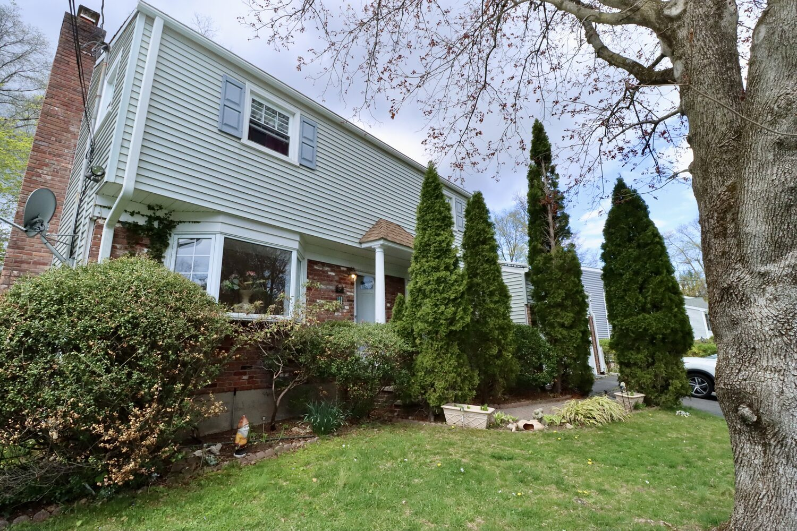

A lot of would-be buyers count themselves out of Stamford because they think they need 20% down. For most people, that's not true — and the gap between "what I think I need" and "what I actually need" is often the difference between renting another year and owning now. Here's the honest breakdown.

What each down payment level looks like
Because Stamford is a high-priced market, small percentages translate to meaningful dollars — so it pays to know your options rather than defaulting to 20%.
- 3% (conventional). The lowest common entry point for qualified buyers. Smallest cash outlay, but a larger loan and PMI added to your monthly payment.
- 3.5% (FHA). Popular with first-time buyers and those with lower credit scores. Comes with FHA mortgage insurance.
- 5%–10% (conventional). A middle path — a smaller loan and lower PMI than 3% down, without draining every dollar of savings.
- 20% (conventional). Avoids PMI entirely and gives you the lowest monthly payment and strongest offer, but at Stamford prices that's a large sum — often well into six figures on a mid-range single-family home. Great if you have it; not required if you don't.
- 0% (VA / USDA). Available to eligible veterans/service members (VA) and in qualifying areas/incomes (USDA). Worth checking if either applies to you.
Don't forget cash-to-close
Your down payment is only part of the cash you bring to the table. Cash-to-close is the full amount: down payment plus closing costs — lender fees, title, prepaid taxes and insurance, escrow setup, and a Connecticut real-estate attorney (closings here are attorney-handled). Those closing costs commonly add a few percent of the purchase price on top of your down payment. See closing costs in Stamford for the full picture, and budget for both so nothing surprises you at the table.
First-time buyer help worth checking
Before you assume you need a mountain of cash, look at the programs. First-time and income-qualified buyers may be eligible for Connecticut Housing Finance Authority (CHFA) options, which can include down payment assistance and below-market rates, plus certain other state and lender programs. Eligibility depends on income, price, and buyer status — I can connect you with local lenders who work with these programs regularly.
How to decide your number
The "right" down payment balances three things: the cash you have, the monthly payment you're comfortable with, and keeping a healthy reserve for moving, repairs, and life. More down means a lower payment and no PMI; less down keeps cash in your pocket and can get you in sooner. There's no universally correct answer — there's the one that fits your budget. A good local lender will model a couple of scenarios side by side, and I'll make sure the homes I show you actually fit the plan.
Find out what you really need
Tell me your budget and I'll connect you with a Stamford-area lender who can pin down your real down payment and cash-to-close — often lower than you'd guess — and then we'll look at homes that fit it.
→ Get set up to buy · What income you need → · How to buy a house in Stamford →